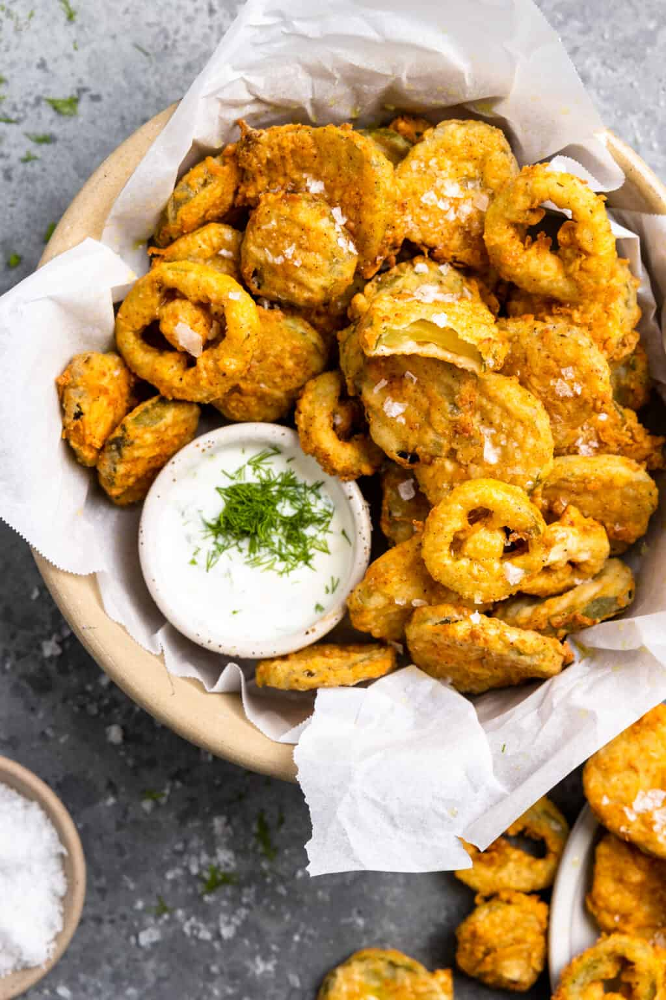

Deep Fried Dill Pickles

Fried Pickles Make a Great Snack or Appetizer
- Homemade fried pickles are so simple to make and taste great!
- This recipe makes a light and crispy exterior with a zesty dill pickle inside.
- Serve crispy deep-fried pickles with your favorite dips: Buttermilk ranch dressing or some blue cheese dressing, homemade aioli, or chipotle aioli for a twist!
Ingredients
- 2 eggs
- 1 cup buttermilk
- 1 tablespoon Worcestershire sauce
- ½ teaspoon vinegar-based hot pepper sauce
- ¾ teaspoon cayenne pepper
- ¼ teaspoon seasoning salt
- ¼ teaspoon garlic powder
- 1 cup cornmeal
- 2 ¼ cups all-purpose flour
- 1 teaspoon salt
- ¾ teaspoon ground black pepper
- 1 (32 ounce) jar dill pickle slices
- 1 cup vegetable oil for deep frying
- salt and pepper to taste
Directions (step by step)
- In a large bowl, combine 2 eggs, 1/4 cup of the flour, buttermilk, Worcestershire sauce, hot sauce, cayenne pepper, seasoning salt and garlic powder.
- In a separate mixing bowl, combine cornmeal, 2 cups flour, salt and 3/4 teaspoon black pepper.
- Preheat oil in a deep fryer or pot to 365 degrees F (180 degrees C).
- Dip drained pickles into milk mixture and then dredge them in the flour mixture. Deep fry until golden brown. Drain on paper towels. Salt and pepper to taste